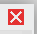

Et c'est parti pour la page qui fait peur ....
On va commencer avec un simple constat :
les informaticiens et les utilisateurs ne parlent pas le même langage...
Mais alors ... comment va-t-on faire ?
Simple : on lit la documentation d'Handy Linux !
Initiation simplifiée à l'informatique sur HandyLinux
L'ordinateur est devenu en quelques années un outil quasi indispensable à la vie moderne.
Le soucis est que l'information et l'éducation ne suivent pas le rythme du progrès et les besoins des utilisateurs.
Il est donc difficile à un "nouvel utilisateur" de découvrir l'intégralité des possibilités de son ordinateur. De plus, nous n'utilisons généralement que quelques applications.
Nous allons tenter de simplifier au maximum cet univers afin que vous puissiez profiter pleinement de votre ordinateur et des possibilités d'HandyLinux.
- L'informatique, comment ça marche ?
quelques exemples simples pour prendre en main la souris et le clavier. - L'informatique, à quoi ça sert ?
simplifions l'informatique, description des différentes sections de la documentation.
L'informatique, comment ça marche ?
On lance des applications, on clique sur des icônes, on tape du texte avec le clavier... on a besoin de l'ordinateur, d'un écran, d'un clavier et d'une souris.
Dans cette section, nous allons vous expliquer les manipulations de base pour utiliser votre souris et votre clavier.
La souris et ses boutons
Commençons par identifier les "clics" de souris selon leur position :
- le clic-gauche le plus commun, sert à ouvrir un dossier, une image... HandyLinux est configuré en mode "simple-clic" : une simple pression du bouton gauche de votre souris ouvrira le fichier/dossier pointé.
- le clic-droit sert à ouvrir un menu contextuel pour modifier les propriétés d'un dossier, d'un fichier...
- le clic-central ou molette sert au défilement, à la copie rapide. si votre souris ne possède pas de bouton central ou de molette, le "clic-central" peut être simulé en appuyant simultanément sur les deux boutons.
Les actions de la souris :
La première chose à
Fermer une fenêtre. Car c'est bien joli d'ouvrir des applications, mais encore faut-il savoir fermer ces fenêtres...
Pour fermer, clic-gauche sur le bouton rouge des fenêtres ouvertes : Glisser-déposer. Pour déplacer ou copier graphiquement vos données.
Ex: pour déplacer un fichier téléchargé dans un dossier, clic-gauche maintenu sur le fichier concerné, déplacer la souris vers le dossier de destination, puis relâcher le bouton de la souris :
Sélectionner du texte.
Placer le pointeur de la souris au début du texte à sélectionner, maintenez le clic-gauche enfoncé tout en déplaçant la souris sur le texte, puis relâcher le bouton de la souris. Vous pouvez aussi effectuer un double-clic (2 pressions successives rapides sur le bouton gauche de la souris) sur le mot à sélectionner, puis déplacer le pointeur.

Copier/Coller une sélection avec le bouton handylinux : une fois votre sélection effectuée (voir chapitre précédent), un clic-gauche sur le bouton "copier/coller" du tableau de bord (le panel HandyLinux), puis clic-gauche sur "copier". Placez ensuite votre pointeur à l'endroit où vous désirez coller la sélection. Retourner sur le bouton "copier/coller" et clic-gauche sur "coller".
avec le clic-droit : le clic-droit va afficher un menu "contextuel" permettant plusieurs actions dont le copier/coller demandé.
On place le pointeur sur la partie sélectionnée, clic-droit puis sélectionner "copier". Placer ensuite le pointeur à l'endroit où vous désirez coller la sélection. clic-droit à nouveau puis "coller".
avec le clic-central : c'est la méthode la plus rapide. Une fois votre texte sélectionné, il vous suffit de placer le pointeur à l'endroit où vous désirez coller la sélection, puis d'effectuer un clic-central . Votre sélection sera copiée instantanément.
Sélectionner plusieurs éléments : si vous souhaitez déplacer ou supprimer plusieurs éléments d'un dossier, vous pouvez les sélectionner ensemble. HandyLinux ouvre les fichiers/dossiers d'un simple clic-gauche. Il faut donc commencer la manipulation en-dehors d'un dossier ou fichier: clic-gauche maintenu , déplacement de la souris pour rassembler les éléments puis on relâche le bouton de la souris. Vous pourrez ensuite agir sur la sélection comme expliqué précédemment (copier/coller ou menu contextuel).
Exercices en ligne
- S'entraîner au clic-gauche
- S'entraîner à la molette et aux barres de défilement
- S'entraîner au glisser déposer
- Sélectionner du texte
- Copier Coller une sélection
le clavier et ses touches
Le clavier ne sert pas uniquement à taper du texte dans la barre de recherche internet ou à travailler avec un éditeur de texte. Il intègre des touches spéciales appelées touches de modification qui permettent d'effectuer des actions rapide en modifiant le comportement des touches "normales". La combinaison de certaines touches "spéciales" avec des touches "normales" forment les raccourcis claviers.
La touche [ENTER] est la première touche "spéciale" sans être réellement une touche de modification. C'est la touche la plus importante de votre clavier, celle qui vous permet d'envoyer une commande, de lancer une recherche, celle qui dit "oui" à l'ordinateur.
Lorsque qu'une fenêtre de dialogue s'affiche à l'écran, que ce soit pour confirmer un téléchargement ou la suppression d'un logiciel, prenez le temps de lire avant de presser la touche [ENTER] ou de cliquer sur "oui".La touche [Ctrl] ou [Control] située de part et d'autres de la barre d'espace en bas de votre clavier. C'est la touche prévue par défaut pour la plupart des raccourcis clavier.La touche [Alt] ou [Fonction] est par défaut la touche qui permet d'afficher les raccourcis spécifiques des applications. Sur une fenêtre ouverte, presser la touche [Alt] fait apparaître les touches rapides pour naviguer dans les menus, effectuer des actions. Ces touches rapides sont identifiés par un soulignement. Si vous maintenez [Alt] enfoncée tout en pressant la touche soulignée, vous afficherez le menu correspondant :
Dans cet exemple, "f" ouvre le menu "fichier", "e" le menu "éditer", "v" le menu "vue", "l" le menu "aller" et enfin "a" ouvre le menu "aide". Vous pouvez circuler dans le menu avec les flèches de directions de votre clavier.La touche [ESC] ou [Echap] permet d'annuler la dernière touche frappée.La touche [Tab] ou [Tabulation], représentée par deux flèches allant dans des sens opposés, permet de compléter une commande ou de circuler dans les menus d'une fenêtre.La touche [Shift] représentée par une large flèche vers le haut, permet de taper des lettres majuscules ou des chiffres.La touche [CapsLock] représenté par un cadenas ou un [Shift] plus large, permet de simuler le maintien de la touche [Shift].Les touches de fonctions [F1], [F2]...[F12] exécutent des fonctions variées.. forcément. la touche [F1] est communément utilisée pour l'aide des applications, [F11] pour le passage en plein-écran... par exemple.
Pourquoi ? ça va plus vite ! Rien à voir avec les raccourcis de l'oncle Georges pour aller à Marseille.
Notez que les raccoucis clavier s'effectuent en maintenant simultanément les touches enfoncées.
Voici une petite sélection des raccourcis clavier les plus utiles :
- [Ctrl]+[c] : Copier une sélection
- [Ctrl]+[x] : Couper une sélection (dans le but de la déplacer)
- [Ctrl]+[v] : Coller la dernière sélection copiée/coupée
- [Ctrl]+[f] : Rechercher un mot ou une expression
- [Ctrl]+molette de la souris : Zoom d'affichage
- [Alt]+[F4] : Fermer la fenêtre active
- [Alt]+[Tab] : Circuler entre les fenêtres ouvertes
La modification des raccourcis clavier appartient aux aventuriers.
Exercices en ligne
Voilà, c'est pas plus compliqué dans la plupart des situations (envoi de mails, navigation internet, consultation de fichiers locaux). La complexité vient avec l'ajout de fonctionnalités ou l'envie de modifier radicalement l'interface de son système.
L'informatique, à quoi ça sert ?
Résumer l'informatique en quelques phrases semble difficile. Pourtant, l'utilisation qu'on en fait est claire :
- regarder un film,
- écouter de la musique,
- effectuer une recherche sur internet,
- lire ou écrire un courrier électronique,
- travailler sur des documents formatés, des présentations,
- parcourir ses photos de famille...
Handy Linux : l'informatique réduit à l'essentiel
Pour vous guider dans l'apprentissage de ce nouvel outil, nous vous présenterons des exemples simples et illustrés classés par catégories.
Nous vous expliquerons l'organisation de votre système, afin de ne plus perdre vos fichiers.
Vous pourrez suivre quelques exercices pratiques qui vous aiderons à prendre en main votre ordinateur.
Enfin, nous vous montrerons comment faire évoluer votre distribution Handy Linux, comment ajouter des applications, configurer finement votre système et vous libérer des contraintes windows™ .
Vous n'êtes pas là pour apprendre à programmer ou pirater la box du voisin, alors restons simples et rendez-vous dans le dossier de la documentation (dossier_personnel/Documents/documentation) afin de prendre en main votre ordinateur avec HandyLinux.
Si vous avez des questions ou des suggestions, n'hésitez pas à nous contacter par mail à l'adresse [contact]@[handylinux].org (sans les crochets)